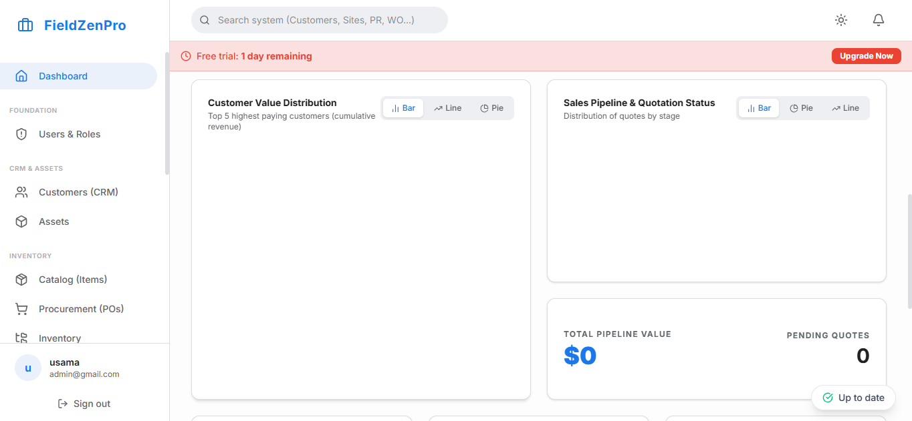

Property maintenance is a unique slice of the field service industry because there are almost always three distinct parties involved: the tenant experiencing the problem, the property manager approving the budget, and the technician executing the repair. When communication between these three parties breaks down, repair times drag out, tenants become furious, and property managers withhold payment.
Property maintenance software acts as the central nervous system for this tri-party relationship. It streamlines the intake of work orders, automates the approval process, and provides transparent status tracking for everyone involved.

A manual maintenance workflow is chaotic: a tenant emails a complaint, the property manager forwards it to a technician, the technician shows up unannounced, realizes they need a $500 part, calls the manager for approval, leaves a voicemail, and the tenant sits with a broken dishwasher for a week. Software fixes this broken chain.
The process starts with a self-serve portal. Tenants log in, select the appliance or area requiring service, and are prompted to upload photos and a detailed description. This structured intake means the technician arrives with context, rather than a vague "kitchen sink broken" email.
Once the work order is approved by the property manager, the software allows the tenant to select an available time window that works for them. The software automatically assigns the job to the appropriate technician based on skill (e.g., plumbing vs. HVAC) and sends automated text reminders to the tenant so they are home to let the technician in.
"In property maintenance, a fast repair isn't enough. You must provide transparency. Software ensures the tenant and the property manager always know exactly what status the work order is in."
If the technician discovers that a repair will exceed the property manager's pre-approved "not-to-exceed" limit (e.g., $250), the workflow pauses. The technician uses the mobile app to generate a quote, attaching photos of the necessary repair. The software instantly emails this quote to the property manager. The manager clicks "Approve" from their phone, and the technician is immediately notified to proceed. This frictionless approval process eliminates days of phone tag.
The most expensive time for a property manager is when a unit sits vacant. Preparing a unit for a new tenant (the "make-ready" process) requires coordinating multiple trades: painting, carpet cleaning, general repairs, and deep cleaning. Property maintenance software allows you to build a sequential "make-ready" template. When the painter marks their task complete, the software automatically triggers the work order for the carpet cleaner to arrive the next morning, drastically reducing vacancy days.
FieldZenPro is designed to handle the multi-party complexity of property maintenance. With tenant intake portals, automated quoting workflows, and robust unit turnover management, it keeps your technicians busy, your property managers informed, and the tenants happy.
Eliminate the phone tag between tenants, managers, and techs. Try FieldZenPro free.
Start Your 14-Day Free Trial